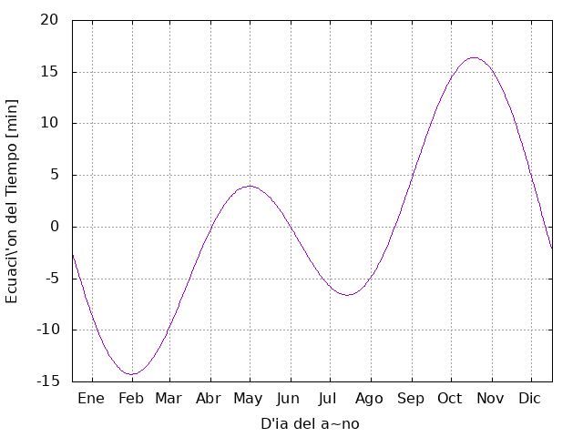

Curso práctico de programación en C
Table of Contents
1 Introducción
2 Teoría básica
2.1 Hola Mundo
El programa clásico para iniciar es el ¡hola mundo!. Que continuación se muestra.
/* gcc -o hello hello.c */ #include <stdio.h> int main() { printf("¡hola mundo!\n"); return 0; }
¡hola mundo!
El programa inicia con un #include <stdio.h>, la cual es una biblioteca que contiene funciones que vamos a utilizar en el programa, como printf().
Al inicio del programa es necesario indicar todas las bibliotecas que contienen las funciones que utilizaremos.
Una vez definidas las bibliotecas nos encontramos con la función main, que como su nombre lo indica es la función principal que contiene el programa, el int antes del main nos indica que espera un número entero de retorno para terminar la función.
La función printf(); nos permite imprimir argumentos, en este caso ¡Hola mundo! y esta definida en la biblioteca stdio.h.
Para ejecutar el programa hello.c, en Linux, utilizamos el compilador gcc de la siguiente manera:
gcc hello.cgcc -o hello hello.c
La primera opción nos generara un archivo a.out, que podemos ejecutar como ./a.out. La segunda opción nos generara un archivo llamado hello que podemos ejecutar de la misma manera ./hello. En general para ejecutar un archivo, en linux, utilizamos el argumento ./file.
2.2 Operaciones matemáticas
El programa math.c muestra las operaciones que pueden ser ejecutadas en C, es decir:
- Suma, +
- Resta, -
- Multiplicación, *
- División, /
- Potencia, pow(x,y)
- Raíz, sqrt(x)
- Modulo, a%b
En este programa se requiere la biblioteca math.h, que contiene las funciones matemáticas necesarias. Para compilar el programa utilizamos la instrucción:
gcc -o math math.c -lm
La etiqueta -lm indica al compilador que utilice la biblioteca de matemáticas.
#include <stdio.h> #include <math.h> int main() { int a, b; double x, y; x = 6.5; y = 2.9; a = (int)x; b = (int)y; printf("Suma %.2f + %.2f = %.2f\n", x, y, x + y); printf("Resta %f - %f = %f\n", x, y, x - y); printf("Multiplicaci'on %f * %f = %f\n", x, y, x * y); printf("Divisi'on %f / %f = %.2f\n", x, y, x / y); printf("Potencia %f ^ %f = %.2f\n", x, y, pow(x,y)); printf("Ra'iz sqrt(%.2f) = %.2f\n", x, sqrt(x)); printf("Modulo mod(%d,%d) = %d\n", a, b, a%b); return 0; }
| Suma | 6.5 | + | 2.9 | = | 9.4 |
| Resta | 6.5 | 0 | 2.9 | = | 3.6 |
| Multiplicaci'on | 6.5 | * | 2.9 | = | 18.85 |
| Divisi'on | 6.5 | / | 2.9 | = | 2.24 |
| Potencia | 6.5 | ^ | 2.9 | = | 227.74 |
| Ra'iz | sqrt(6.50) | = | 2.55 | ||
| Modulo | mod(6,2) | = | 0 |
En C es necesario declarar todas las variables que se van a utilizar. En este caso se declararón dos enteros int a,b;, y dos dobles double x,y;. Sólo por convención se deben de declarar las variables en el siguiente orden:
- char
- int
- double
La función printf() es una función muy importante en C, ya que nos permite imprimir los resultados. A continuación se explica lo más básico de esta función:
printf("Resta %f - %f = %f\n", x, y, x - y);
Entre comillas va el texto que deseamos imprimir "Resta %f ...", el símbolo %f tomare el valor de la variable doble x, el siguiente %f tomará el valor de y, y la última %f de x-y. El comando \n indica que habrá un salto de pagina. Así como puede imprimir un doble (%f), también lo puede hacer un entero o una cadena de caracteres.
%despera un entero%fespera un doble%sespera una cadena de caracteres\nsalto de línea\tTab
2.3 Lectura de datos con scanf
Una forma interactiva de ejecutar un programa es solicitando los valores de algunos valores. Es una forma muy tediosa de ejecutar un programa, al principio puede resultar útil pero con el tiempo (al terminar este manual, por ejemplo) se dará cuenta que hay mejores alternativas. Pero no deja de ser ilustrativo.
/* gcc -o scanf scanf.c */ #include <stdio.h> int main() { int a, b, sum; printf("Ingrese el primer entero\n"); scanf("%d", &a); printf("Ingrese el segundo entero\n"); scanf("%d", &b); sum = a + b; printf("La suma es %d\n", sum); return 0; }
#!/usr/bin/env bash ./scanf 56 23
| Ingrese | el | primer | enter |
| Ingrese | el | segundo | entero |
| La | suma | es | 79 |
3 Ciclos
Antes de iniciar con los ciclos, vamos ver el preincremento y posincremento, los cuales son muy útiles a la hora de realizar ciclos en C.
/* gcc -o incrementing incrementing.c */ #include <stdio.h> int main() { int c; c = 2; printf("%d\n", c); printf("%d\n", c++); /* posincremento */ printf("%d\n\n", c); c = 2; printf("%d\n", c); printf("%d\n", ++c); /* preincremento */ printf("%d\n\n", c); return 0; }
| 2 |
| 2 |
| 3 |
| 2 |
| 3 |
| 3 |
Lo que podemos observar es que c++ incrementa el valor siguiente de manera posteriormente, mientras que ++c lo hace de manera inmediatamente.
Para trabajar con ciclos también es necesario conocer los operadores Booleanos:
- a == b, \(a\) igual a \(b\)
- a != b, \(a\) diferente de \(b\)
- a < b, \(a\) menor que \(b\)
- a > b, \(a\) mayor que \(b\)
- a <= b, \(a\) menor o igual que \(b\)
- a >= b, \(a\) mayor o igual que \(b\)
Puedes combinar más de una condición
&&, AND lógico||, OR lógico
3.1 for
El comando for realiza un ciclo definido por un contador, en un intervalo y con un incremento determinado. A continuación se muestra la sintaxis del comando for, el contador es i en el intervalo [0,n), con incrementos i++. Hay que recordar que los contadores en C inician en cero, y que \(i++\) es equivalente a \(i= i + 1\).
/* gcc -o for for.c */ #include <stdio.h> int main( ) { int sum, i, N; sum = 0; N = 5; for (i = 0; i < N; i++) sum += i; printf("La suma es %d\n", sum); return 0; }
La suma es 10
Para visualizar mejor lo que esta ocurriendo en el ciclo for vamos a imprimirlo.
/* gcc -o for for.c */ #include <stdio.h> int main( ) { int sum, i, N; sum = 0; N = 5; for (i = 0; i < N; i++){ printf("sum = %d + %d\t", sum, i); sum += i; printf("sum = %d\n", sum); } return 0; }
| sum = 0 + 0 | sum = 0 |
| sum = 0 + 1 | sum = 1 |
| sum = 1 + 2 | sum = 3 |
| sum = 3 + 3 | sum = 6 |
| sum = 6 + 4 | sum = 10 |
3.2 if
El ciclo if es un condición, el ciclo se realizará mientras se cumpla una condición, cuando esta condición sea falsa entonces el ciclo termina.
/* Uso de operadores */ #include <stdio.h> int main() { int a, b; a = 5; b = 7; if (a == b){ printf("%d es igual a %d\n", a, b); } if (a != b){ printf("%d no es igual a %d\n", a, b); } if (a < b){ printf("%d es menor que %d\n", a, b); } if (a > b){ printf("%d es mayor que %d\n", a ,b); } if (a <= b){ printf("%d es menor o igual que %d\n", a, b); } if (a >= b) { printf("%d es mayor o igual que %d\n", a, b); } return 0; }
| 5 | no | es | igual | a | 7 | |
| 5 | es | menor | que | 7 | ||
| 5 | es | menor | o | igual | que | 7 |
3.3 else
La función else se utiliza en el ciclo de condición if de manera que si no cumple la condición de if entonces realiza else.
#include <stdio.h> int main( ) { int a; a = 5; if(a%2 == 0){ printf("Número par\n"); } else{ printf("Número impar\n"); } return 0; }
Número impar
3.4 else if
La función else if nos permite colocar mas de una condición en el ciclo de la siguiente manera.
/* Uso de operadores */ #include <stdio.h> int main() { int a, b; a = 5; b = 10; if (a == b){ printf("%d es igual a %d\n", a, b); } else if (a < b){ printf("%d es menor que %d\n", a, b); } else if (a > b){ printf("%d es mayor que %d\n", a ,b); } else{ printf("Error\n"); } return 0; }
5 es menor que 10
3.5 while
La función while realiza el ciclo mientras no se cumpla la condición.
/* Uso del While */ #include <stdio.h> int main() { int counter = 1; /* Inicializaci'on */ while (counter <= 6) { /* Condici'on */ printf("%d ", counter); ++counter; /* Incremento */ } printf("\n"); return 0; }
1 2 3 4 5 6
3.6 do/while
El ciclo do/while es similar al while, pero cambia la estructura.
/* Uso de la estructura do/while */ #include <stdio.h> int main( ) { int counter = 1; do { printf("%d ", counter); } while (++counter <= 5); printf("\n"); return 0; }
1 2 3 4 5
3.7 break
No se recomienda el uso del comando break. Algunos programadores son de la opinión de que break y continue violan las normas de la programación estructurada.
/* Uso de la declaraci'on brake dentro de la estructura */ #include <stdio.h> int main( ) { int x; for (x=1; x<=10; x++) { if (x == 5) break; /* break loop only if x == 5 */ printf("%d ", x); } printf("\n Salida por break a x=%d\n", x); return 0; }
| 1 | 2 | 3 | 4 | |
| Salida | por | break | a | x=5 |
4 Funciones
Las funciones en C pueden ser declaradas dentro de la función principal, main, o en un archivo externo y llamado como una biblioteca.
4.1 Declaración de la función dentro del main
Para utilizar una función dentro de C es necesaria definirla primero. Vamos a definir la función square, que eleva al cuadrado cualquier número entero.
int square(int y){
int x;
x = y*y;
return x;
}
- int square(int y).
- int, indica el tipo de variable que regresa la función
- square, indica el nombre de la función
- (int y), son las variables de entrada de la función y el tipo de variable
Dentro de una función puedes declarar las variables que necesites, pero al final el regreso sera un entero, para este caso.
Cuando se define la función dentro del archivo donde esta el main hay que indicar que esa función existe, y se hace después de las bibliotecas y antes del inicio del main. Una vez que termina el main, se define la función.
/* gcc -o square -square.c */ #include <stdio.h> int square(int); int main( ) { int x; for (x=1; x <= 5; x++) printf("%d ", square(x)); printf("\n"); return 0; } /* Definici'on de la funci'on */ int square(int y) { return y*y; }
1 4 9 16 25
De esta manera podemos declarar las funciones necesarias dentro de nuestro programa.
4.2 Declaración de la función en un archivo externo
Cuando el programa es muy grande no conviene definir todas las funciones dentro del main. Una alternativa es generar todas las funciones en un archivo distinto. Por ejemplo, un archivo llamado square.c.
int square(int y) { return y*y; }
También es necesario generar un archivo square.h en donde indicamos que existe la función.
int square(int y);
Ahora el archivo principal que contiene el main, que llamaremos mainf.c, puede utilizar la función square() únicamente declarándole que existe, para lo cual agregamos #include "square.h". Para compilar el programa es necesario agregar el archivo que incluye la función:
> gcc -o mainf mainf.c square.c
/* gcc -o mainf mainf.c square.c */ #include <stdio.h> #include "square.h" int main() { int x; for (x=1; x <= 5; x++) printf("%d ", square(x)); printf("\n"); return 0; }
1 4 9 16 25
El resultado es el mismo.
5 Punteros
Las operaciones con matrices son quizás la forma más fácil de resolver un problema matemático. En C las matrices no están definidas, pero existen punteros que nos permiten definir arreglos de datos.
Vamos a definir la operación producto punto dot, para lo cual es necesario definir una función que realice el producto punto, de la siguiente manera:
double dot(double *x, double *y){
int i;
double z;
for (i = 0; i < 3; i++)
z += x[i]*y[i];
return z;
}
El producto punto es una operación vectorial que tiene como resultado un escalar. En la función antes definida se espera que regrese un double, y tiene como valores de entrada dos dobles que son punteros double *x, indicado con el asterisco antes de la variable. Hay que recordar que en C los contadores empiezan en cero, es decir que si nosotros generamos un espacio para tres valores en un puntero llamado x estos serán x[0], x[1] y x[2]. Hay que recordar que el producto punto esta definido por:
Que es justamente lo que esta definido en la función dot. Existe muchas formas de resolver el problema, en el ejemplo anterior se muestra una solución elegante porque es compacta. Pero al inicio a uno no le interesa que sea elegante, sino que funcione, y que uno le entienda. Y muy probablemente la solución sea la siguiente:
double dot(double *x, double *y){
int i;
double z;
z = x[0]*y[0] + x[1]*y[1] +x[2]*y[2];
return z;
}
Hay ocasiones en donde no se trata de vectores, sino de columna de datos de N longitud, la solución que utiliza la función for puede bien servir para ese tipo de arreglos, la segunda solución sería poco práctico escribir todos los términos a multiplicar.
A continuación se muestra el uso de la función dot.
/* Producto punto */ /* gcc -o dot dot.c */ #include <stdio.h> #include <stdlib.h> double dot(double *x, double *y); int main() { double *x,*y, z; x = (double *)calloc(3, sizeof(double)); y = (double *)calloc(3, sizeof(double)); x[0] = 1; x[1] = 2; x[2] = 3; y[0] = 1; y[1] = 1; y[2] = 1; z= dot(x,y); printf("z = %.2f\n", z); return 0; } double dot(double *x, double *y){ int i; double z; for (i = 0; i < 3; i++) z += x[i]*y[i]; return z; }
Para definir un punteros puntero primero declaramos la variable en este caso double *x, ahora C sabe que x es un puntero. Hay que reservar el espacio necesario, para lo cual utilizamos la función calloc y reservamos tres espacios double en \(x\), x = (double *)calloc(3, sizeof(double)). Ahora ya es posible utilizar la variable x como vector.
5.1 Vectores y Matrices
Trabajar con con vectores y matrices en C puede resultar complicado, pero si se tienen una estructura ordenada en el programa resultar tan fácil como en un lenguaje de alto nivel.
A continuación vamos a definir una serie de funciones útiles para trabajar con matrices. Pero primero vamos a plantear un problema a resolver.
Problema: Un vector $v = v1, v2, v3 $ es rotado en un sistema de referencia coordenado un ángulo \(\theta\) al rededor del eje \(x\). ¿Calcula el nuevo vector?
R: La matriz de rotación es:
\begin{equation} M = \left[ \begin{matrix} 1 & 0 & 0 \\ 0 & \cos \theta & \sin \theta \\ 0 & -\sin \theta & \cos \theta \end{matrix} \right] \end{equation}Entonces \(\vec v = M^{-1} \vec v'\)
#include <stdlib.h> /* -------- */ /* Arreglos */ /* -------- */ /* 1D int */ int *one_d_int_array(int n) { int *ptr; ptr = (int *) calloc(n,sizeof(int)); return ptr; } /* 2D int */ int **two_d_int_array(int lx, int ly) { int **ptr, i; ptr = (int **) calloc(lx,sizeof(int*)); for(i=0;i<lx;++i) ptr[i] = (int *) calloc(ly,sizeof(int)); return ptr; } /* 1D double */ double *one_d_double_array(int n) { double *ptr; ptr = (double *) calloc(n,sizeof(double)); return ptr; } /* 2D double */ double **two_d_double_array(int lx, int ly) { int i; double **ptr; ptr = (double **) calloc(lx,sizeof(double*)); for(i=0;i<lx;++i) ptr[i] = (double*) calloc(ly,sizeof(double)); return ptr; }
#define PI 3.1415926535897932384626433832795028841971 #define D2R(grad) (grad*PI/180.0) #define R2D(rad) (rad * 180.0/PI) int *one_d_int_array (int n); int **two_d_int_array(int lx, int ly); double *one_d_double_array(int n); double **two_d_double_array(int lx, int ly);
/* gcc -o runvec runvec.c vectorial.c */ #include <stdio.h> #include <math.h> #include "vectorial.h" int main(int argc, char *argv[]) { int i, j; double theta; double *v, *vr, **M; v = one_d_double_array(3); vr= one_d_double_array(3); M = two_d_double_array(3, 3); theta = D2R(90); v[0] = 0.; v[1] = 2.; v[2] = 3.; M[0][0] = 1.; M[0][1] = 0.; M[0][2] = 0.; M[1][0] = 0.; M[1][1] = cos(theta); M[1][2] = -sin(theta); M[2][0] = 0.; M[2][1] = sin(theta); M[2][2] = cos(theta); for (i = 0; i < 3; ++i) for (j = 0; j < 3; ++j) vr[i] += M[i][j]*v[j]; printf("vr = (%.2f, %.2f, %.2f)\n", vr[0], vr[1], vr[2]); return 0; }
#!/usr/bin/env bash gcc -o runvec runvec.c vectorial.c -lm ./runvec
| vr = (0.00 | -3.0 | 2.00) |
6 Leer datos de entrada desde la terminal
Previamente se había comentado que no era tan eficiente leer datos con scanf, y es que es posible ingresar datos directamente desde la terminal, al ejecutar el programa.
./program var1 var2 varN
De esta manera uno puede ejecutar el programa rápidamente, conociendo la secuencia de variables.
A continuación se muestra el programa readT.c que pude leer los datos que son ingresados en la linea de comando.
#include <stdio.h> #include <stdlib.h> int main(int argc, char *argv[]) { int n; double x; n = atoi(argv[1]); printf("%d\n", n); x = atof(argv[2]); printf("%f\n", x); return 0; }
Dentro del main se le indica que existirán argumentos sobre la linea de comandos que hay que leer. Y con las funciones atoi y atof le indicamos si la variable es entera o double. Las cuales esta claro, pueden ser utilizadas para los propósitos que nos interesen.
#!/usr/bin/env bash ./readT 4 3.5
Este tipo de ejecutables son muy útiles, pues fácilmente pueden cambiarse las variables de entrada y obtener nuevos resultados.
6.1 Vectores y matrices
El ejemplo de rotación alrededor del ángulo \(\theta\) pude hacerse aun más manejable en el main.
#include <stdlib.h> #include <math.h> /* -------- */ /* Arreglos */ /* -------- */ /* 1D int */ int *one_d_int_array(int n) { int *ptr; ptr = (int *) calloc(n,sizeof(int)); return ptr; } /* 2D int */ int **two_d_int_array(int lx, int ly) { int **ptr, i; ptr = (int **) calloc(lx,sizeof(int*)); for(i=0;i<lx;++i) ptr[i] = (int *) calloc(ly,sizeof(int)); return ptr; } /* 1D double */ double *one_d_double_array(int n) { double *ptr; ptr = (double *) calloc(n,sizeof(double)); return ptr; } /* 2D double */ double **two_d_double_array(int lx, int ly) { int i; double **ptr; ptr = (double **) calloc(lx,sizeof(double*)); for(i=0;i<lx;++i) ptr[i] = (double*) calloc(ly,sizeof(double)); return ptr; } double *rotx(double *v, double theta){ int i, j; double *x, **M; M = two_d_double_array(3, 3); x = one_d_double_array(3); M[0][0] = 1.; M[0][1] = 0.; M[0][2] = 0.; M[1][0] = 0.; M[1][1] = cos(theta); M[1][2] = -sin(theta); M[2][0] = 0.; M[2][1] = sin(theta); M[2][2] = cos(theta); for (i = 0; i < 3; ++i) for (j = 0; j < 3; ++j) x[i] += M[i][j]*v[j]; return x; }
#define PI 3.1415926535897932384626433832795028841971 #define D2R(grad) (grad*PI/180.0) #define R2D(rad) (rad * 180.0/PI) int *one_d_int_array (int n); int **two_d_int_array(int lx, int ly); double *one_d_double_array(int n); double **two_d_double_array(int lx, int ly); double *rotx(double *v, double theta);
/* gcc -o runvec runvec.c vectorial.c */ #include <stdio.h> #include <stdlib.h> #include <math.h> #include "vectorial2.h" int main(int argc, char *argv[]) { double theta; double *u, *v, **M; u = one_d_double_array(3); v = one_d_double_array(3); u[0] = atof(argv[1]); u[1] = atof(argv[2]); u[2] = atof(argv[3]); theta = atof(argv[4]); theta = D2R(theta); v = rotx(u, theta); printf("v = (%.2f, %.2f, %.2f)\n", v[0], v[1], v[2]); return 0; }
#!/usr/bin/env bash gcc -o runvec2 runvec2.c vectorial2.c -lm ./runvec2 1 2 0 45
| v = (1.00 | 1.41 | 1.41) |
7 Guardar datos de salida en archivo
Ahora vamos a hacer un programa más elaborado, en el cual utilizaremos una nueva función llamada fprintf, la cual nos permite enviar la información a un archivo.
int main(){
...
char s_file[80];
FILE *f;
sprintf(s_file, "EdT.dat");
f = fopen(s_file, "w");
...
fprintf(f, "data\t%f\n", var);
return 0;
}
La sección de código anterior nos muestra como guardar los datos generados en un archivos llamado EdT.dat. La extensión no es relevante, como en muchos archivos de linux, si lo desea nombrar como EdT.txt, el como estará separado depende de la función fprintf. Mediante la función sprintf asignamos la cadena de caracteres a la variable s_file que previamente definimos, y mediante la función fopen indicamos que se creara un archivo con ese nombre y será para escribir, "w" de write. Por último con la función fprintf enviamos los datos de salida al archivo.
El archivo EdT.c calcula la ecuación del tiempo,
Donde \(N\) es el día del año, y \(E(B)\) esta en minutos.
/* ggc -o EdT EdT.c */ #include <stdio.h> #include <math.h> #define PI 3.1415926535897932384626433832795028841971 double _B(int N); double d2r(double grados); double r2d(double radianes); double EdT(double B); int main(int argc, char *argv[]) { char s_file[80]; int N; double B; FILE *f; sprintf(s_file, "EdT.dat"); f = fopen(s_file, "w"); for (N = 0; N < 365; N++) { B = _B(N); fprintf(f, "%d\t%f\n", N, EdT(B)); } return 0; } /* Funciones basicas */ /* ------------------------------------------------------------------- */ double _B(int N){ return 2.0*PI*(N-1)/365.0; /* radianes */ } /* radianes a grados */ double r2d(double radianes){ return (180.0/PI)*radianes; } /* grados a radianes */ double d2r(double grados){ return (PI/180.0)*grados; } /* Ecuación del tiempo [minutos] */ double EdT(double B){ return 229.2 * (0.000075 + 0.001868*cos(B) \ -0.032077*sin(B) - 0.014615*cos(2*B) - 0.04089*sin(2*B)); }
A continuación se muestra parte de los resultados del archivo EdT.dat, así como la gráfica del mismo.
| 0 | -2.453348 |
| 1 | -2.904422 |
| 2 | -3.351653 |
| 3 | -3.794623 |
| 4 | -4.23292 |
| 5 | -4.666137 |
| 6 | -5.093873 |
| 7 | -5.515734 |
| 8 | -5.931333 |
| 9 | -6.340289 |

8 Leer un archivo de datos
9 Reciclando código
10 Makefile
Los archivos Makefile son útiles cuando se tiene una gran cantidad de bibliotecas locales.
11 Funciones gsl
12 Funciones básicas
Para una buena programación es necesarío tener una buena base de funciones programadas
12.1 Base
El archivo base.c/base.h contiene una algunas funciones básicas de uso común en todos los programas.
#include <stdio.h> #define PI 3.1415926535897932384626433832795028841971 /* Grados a radianes */ #define D2R(grados) (grados * PI/180.0) /* Radianes a grados */ #define R2D(radianes) (radianes * 180.0/PI) /* Regresa el signo -1, 1 o 0 */ #define SIGN(X) ((X > 0) - (X < 0)) #define MIN(a,b) (((a)<(b))?(a):(b)) #define MAX(a,b) (((a)>(b))?(a):(b)) int *one_d_int_array(int n); int **two_d_int_array(int lx, int ly); double *one_d_double_array(int n); double **two_d_double_array(int lx, int ly); double ***three_d_double_array(int lx, int ly, int lz); void free_two_d_int_array(int n,int **s); void free_two_d_double_array(int n,double **s); void free_three_d_double_array(int lx, int ly, double ***s); double rtimer(); double minut_cpu(); void _make_file_name(char s_aux[20],char s_base[80],char s_pars[150],\ char s_term[20],char *s_file); double lineCount(FILE *f);
#include <stdio.h> #include <stdlib.h> #include <string.h> #include <math.h> #include <time.h> #define PI 3.1415926535897932384626433832795028841971 /* ---------------------------------------------------------------------- */ /* Arreglos */ /* ---------------------------------------------------------------------- */ /* 1D int */ int *one_d_int_array(int n) { int *ptr; ptr = (int *) calloc(n,sizeof(int)); return ptr; } /* 2D int */ int **two_d_int_array(int lx, int ly) { int **ptr, i; ptr = (int **) calloc(lx,sizeof(int*)); for(i=0;i<lx;++i) ptr[i] = (int *) calloc(ly,sizeof(int)); return ptr; } /* 1D double */ double *one_d_double_array(int n) { double *ptr; ptr = (double *) calloc(n,sizeof(double)); return ptr; } /* 2D double */ double **two_d_double_array(int lx, int ly) { int i; double **ptr; ptr = (double **) calloc(lx,sizeof(double*)); for(i=0;i<lx;++i) ptr[i] = (double*) calloc(ly,sizeof(double)); return ptr; } /* 3D double */ double ***three_d_double_array(int lx, int ly, int lz) { int i,j; double ***ptr; ptr = (double ***) calloc(lx,sizeof(double**)); for(i=0;i<lx;++i) { ptr[i] = (double **) calloc(ly,sizeof(double*)); for(j=0;j<ly;++j) { ptr[i][j] = (double *) calloc(lz,sizeof(double)); } } return ptr; } void free_two_d_int_array(int n,int **s) { int i; for (i=0;i<n;++i) free(s[i]); } void free_two_d_double_array(int n,double **s) { int i; for (i=0;i<n;++i) free(s[i]); } void free_three_d_double_array(int lx, int ly, double ***s) { int i,j; for (i=0;i<lx;++i) { for (j=0;j<ly;++j) { free(s[i][j]); } free(s[i]); } } /* ---------------------------------------------------------------------- */ /* Nombre del archivos */ /* ---------------------------------------------------------------------- */ void _make_file_name(char s_aux[20],char s_base[80],char s_pars[150],\ char s_term[20],char *s_file){ sprintf(s_file,"%s",s_base); strcat(s_file,s_pars); strcat(s_file,s_aux); strcat(s_file,s_term); //printf("%s\n",s_file); } /* ---------------------------------------------------------------------- */ /* Cuenta el numero de filas en un archivo */ /* ---------------------------------------------------------------------- */ double lineCount(FILE *f){ int ch, lines; lines = 0; while(!feof(f)) { ch = fgetc(f); if(ch == '\n') lines++; } fclose(f); return lines; } /* ---------------------------------------------------------------------- */ /* Calculo del tiempo de computo */ /* ---------------------------------------------------------------------- */ clock_t qq_0; void rtimer() { qq_0=clock(); } /* Devuelve el numero de minutos transcurridos del CPU hasta la llamada */ double minut_cpu() { clock_t qq_1; double a,fakt=(1./60.)*(1./CLOCKS_PER_SEC); qq_1=clock(); a=fakt*(qq_1-qq_0); return(a); } #undef PI